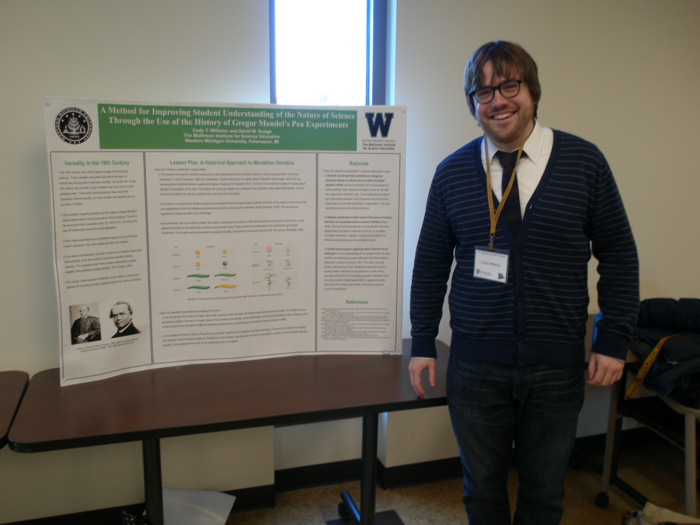

Cody T. Williams and David W. Rudge The Mallinson Institute for Science Education
|
|
| Abstract: While science educators have long recognized the importance of teaching issues associated with the nature of science (NOS), they continue to disagree regarding how best to teach it. Some have strongly advocated using history of science. This poster outlines a method for teaching the nature of science and science content related to heredity using an episode from the history genetics, namely Gregor Mendel' s famous experiments on peas. The first section of the poster reviews the history of the study of heredity primarily during the 19th century. The next section includes a summary of two lesson plans in which students are asked to interpret data from Mendel' s original paper. Students first pose their own ideas and then formulate explanations based on the interpretations of Mendel and other prominent 19th century scientists. The final section of the poster contains an argument for why this particular use of history is effective for teaching two specific aspects of the nature of science. | |
| PUBLICATIONS | |
| 2015 | Williams, C.T., Walter, E.M., Henderson, C., & Beach, A.L. Describing undergraduate STEM teaching practices: A comparison of instructor self-report instruments. International Journal of STEM Education-accepted. |
| Williams, C.T. & Rudge, D.W. Mendel and the Nature of Science. American Biology Teacher 77(7): 492-499. | |
| 2013 | Williams, C.T & Rudge, D.W. A Method for Improving Student Understanding of the Nature of Science Through the Use of the History of Gregor Mendel's Pea Experiments. Pp. 175-185. In Heering, P, Klassen, S., Metz, D. (eds.) Enabling Scientific Understanding Through Historical Instruments and Experiments in Formal and Non-Formal Learning Environments, Flensburg University Press: Flensburg, Germany. |
| PRESENTATIONS | |
| Williams, C.T., Walter, E.M., Henderson, C., & Beach, A.L. "Describing undergraduate STEM teaching practices: A comparison of instructor self-report instruments." National Association for Research in Science Teaching (NARST), Chicago, IL, 14 April 2015. | |
| Williams, C.T. & Rudge, D.W. "The impact of using history of genetics on preservice teachers' views of the nature of science." 2014 Michigan Academy of Science, Arts, and Letters Conference, Oakland University, Rochester, MI, 28 Feb 2014. | |
| Williams, C.T. & Rudge, D.W. "A Method for Improving Student Understanding of the Nature of Science Through the Use of the History of Gregor Mendel's Pea Experiments." Twelfth Biennial Meeting of the International History, Philosophy & Science Teaching Group (IHPST), University of Pittsburgh, Pittsburgh, PA, 20 Jun 2013 - poster | |
| Williams, C.T. & Rudge, D.W. "A Method for Improving Student Understanding of the Nature of Science Through the Use of the History of Gregor Mendel's Pea Experiments." Second Annual Graduate Humanities Conference, Western Michigan University, Kalamazoo, MI, 22 Mar 2013 - poster | |
| Williams, C.T. & Rudge, D.W. "A Method for Improving Student Understanding of the Nature Science Through the Use of the History of Gregor Mendel's Pea Experiments" Ninth International Conference for the History of Science in Science Education: Enabling Scientific Understanding through Historical Instruments and Experiments in Formal and Non-Formal Learning Environments, Flensburg University, Flensburg, Germany on July 31, 2012. -poster | |
Last updated on 15 Oct 2015.